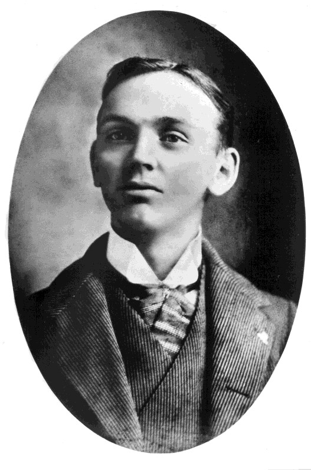
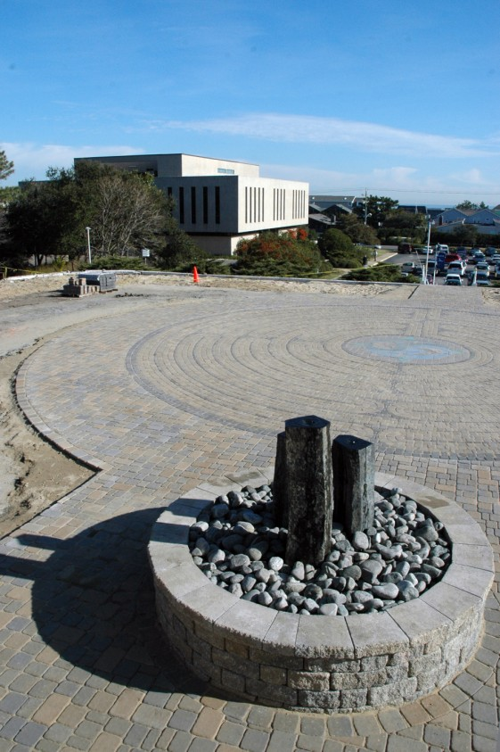

埃德加•凯西其人：
二十世纪的通灵师和医学灵异大师
埃德加•凯西（1877-1945）被称为“睡着的先知”和“整体医疗之父”，是二十世纪记录最多的灵异大师。在其成年后的四十多年时间内，凯西在无意识状态下为数千求助者进行了灵异“解读”，包括诊断疾病、揭示前世并预言未来。但是，凯西究竟是怎样一个人？凯西于1877年出生在美国肯塔基州的霍普金斯维尔，而他的通灵能力自童年时期就开始展现。他可以看见祖父的灵魂并与之交谈，并经常与“想象中的朋友”一起玩耍，按他的说法，那些朋友是彼岸的灵魂。他还展现了一种神奇的能力：只需要趴在一本书上睡一会，就可以记住书中的内容。种种这些能力让小时候的凯西显得有些奇怪，但凯西真正想要做的是去帮助他人，特别是儿童。

后来，凯西发现自己躺在沙发上、闭上眼、将手叠放在腹部可以进入一种催眠状态。在这种放松和冥想的状态下，他能够与所有时空建立联系，这被称为宇宙意识或超意识。他可以回答的问题范围非常广，比如“宇宙的秘密是什么？”、“生活的目标是什么？”，还可以具体到“怎样治疗关节炎？”、“埃及的金字塔是怎样建成的？”。他的回答被称为“解读”，其中包含信息即使在现在看来都能够对人们提供帮助和建议。了解到凯西经常去做礼拜，而且还是主日学校的一名老师，许多人感到非常惊讶。年轻时，凯西发誓每年读一遍圣经，至1945年去世，他完成了这个任务。当被问及如何变得通灵时，或许凯西在解读中给出了最佳答案，他的建议是变得更加灵性。

埃德加•凯西研究和启示协会（A.R.E.），地址：弗吉尼亚州弗吉尼亚海滩
尽管凯西在60多年前就去世了，但有上百本书籍证明了其解读材料（包含诸多主题，例如发现生活的使命、开发直觉、探索古代的奥秘、为健康负责）的时效性，这些书籍涉及其解读的方方面面；还有十数篇文章讨论了凯西的一生。这些书籍的内容具有很高的价值，即使凯西本人都无法预测这些内容对当今世界的影响。在1945年，也就是凯西去世那年，谁能想到“冥想”、“阿卡西记录”、“心灵成长”、“光环”、“灵魂伴侣”、“整体健康”会成为家喻户晓的词汇？
埃德加•凯西的大部分解读专注于整体健康和疾病的治疗。即使到今天，各个阶层、各种信仰的人们仍能利用凯西的解读缓解疾病——其中一些解读甚至是在100多年前给出的！然而，尽管这方面的解读最为知名，但是自我催眠的凯西似乎并没有被限制在人的肉体方面。事实上，他的解读讨论了10000多个不同的主题。然而，尽管数量如此惊人，但它们可以被归纳为更小的范围。这些主题可以被编辑为五大类内容：（1）与健康有关的信息；（2）哲学和轮回；（3）梦和梦的解析；（4）超感知和心灵现象；（5）心灵成长、冥想、祈祷。
凯西的一生及其解读的更多细节在托马斯•苏各儒所著的一本经典作品 一条大河 (1942)中进行了探讨，该作品有精装本、平装本以及有声读物版本。

凯西于1931年创立了一家非赢利机构——埃德加•凯西研究和启示协会（A.R.E.），协会成员可以在协会网站的数据库中阅读所有14306份解读材料，非成员不可阅读。完整的解读材料还存放于我们位于弗吉尼亚海滩总部的图书馆中，每日都向公众开放。
若想了解A.R.E.更多信息，请访问关于A.R.E.页面。